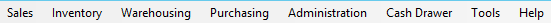
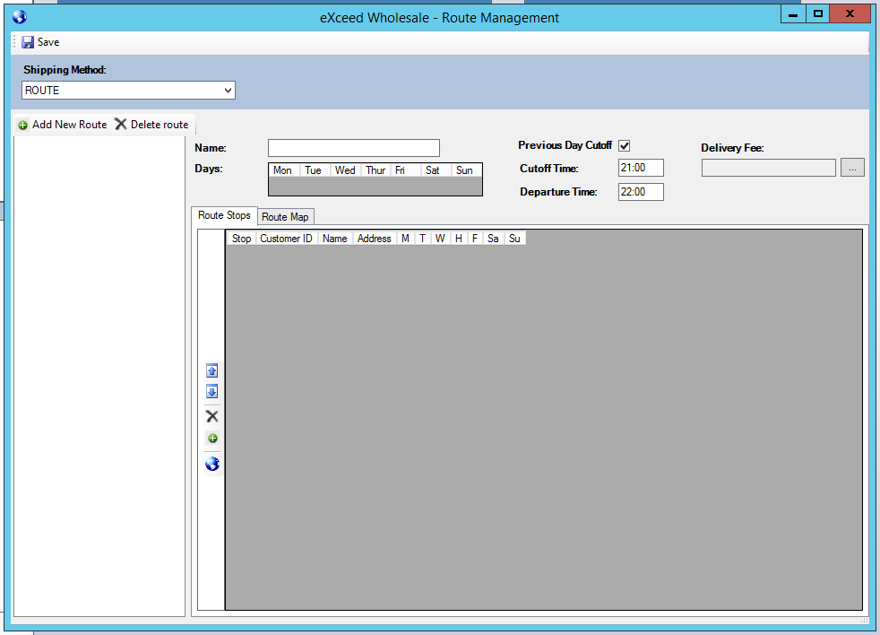
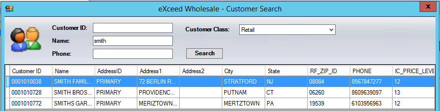
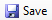

Route Management/Stop Assignment
Allows standard routing functionality with the ability to assign cutoff times and days of the week delivery specific to the route and/or specific to a stop.
Home Screen: Select Warehousing from module toolbar and then


Create New Route
-
- Select
- Assign Route Name
- Select Days of the week delivery
- Select Previous Day Cutoff (default with be checked)
- Enter Cutoff Time (in hours ONLY)
- Enter Departure Time
- Enter Delivery Fee Sku if applicable (search with ellipses if Sku is unknown)
Adding Stops
-
- Select Enter as little or as much information as known and select search
- If multiple shipping addresses, multiple results with display
- Verify correct address selected
- If multiple shipping addresses, multiple results with display
- Select Enter as little or as much information as known and select search

-
- Highlight appropriate customer and select OK
- Will populate on the Route/Stops tab for selected route at the bottom of the stop list
- Can also be added in the customer record in the Address Tab with appropriate access rights
- Will display at the top of the stop list
- Can also be added in the customer record in the Address Tab with appropriate access rights
- Verify days of the week delivery are correct by stop
- By default, added stop will default to the route default days
- Once all customers have been added to route, arrange stops by using apropriate
- At completion of new route, select

Route/Stop Maintenance
- Delete Route – Highlight appropriate route for deletion, and select
- Change Route Name – Highlight appropriate route and enter new name
- Change stop order – Highlight stop to move and use up/down arrows to change stop position
- Delete stop – Highlight stop to delete and select
- Change day of week delivery by stop – Highlight stop to change and deselect the days not requested to have delivery
 Suggestion: When searching for specific customer in long list of stops use CTL + F to enter desired infromation.
Suggestion: When searching for specific customer in long list of stops use CTL + F to enter desired infromation.